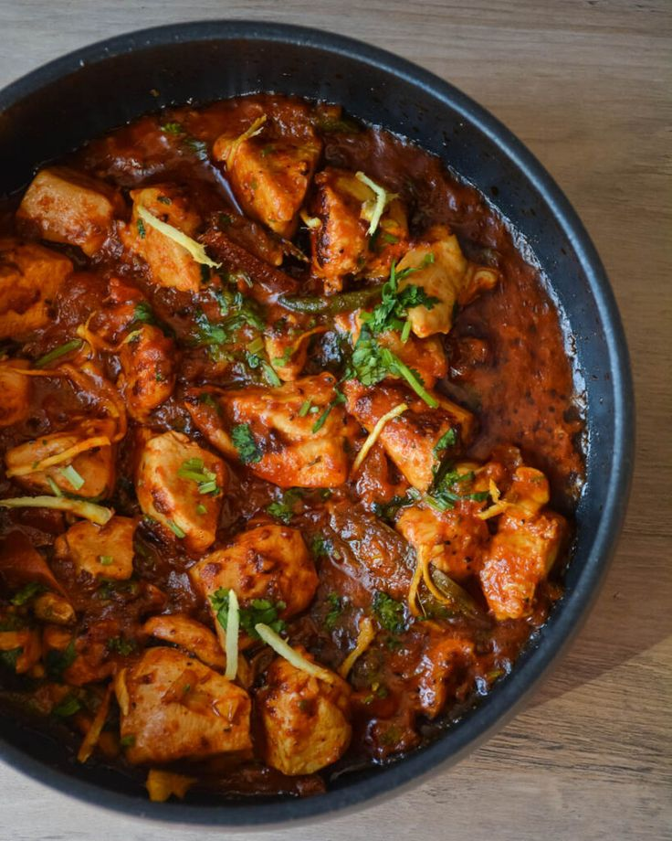
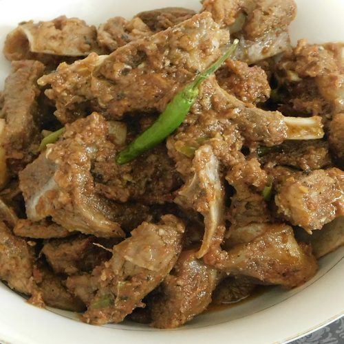

| Dinner |
Chicken Karahi |
 |
- 500g chicken, cut into pieces
- 2 tomatoes, chopped
- 1 onion, sliced
- 2 green chilies, chopped
- 1/2 cup yogurt
- 1/4 cup cooking oil
- 1 teaspoon ginger-garlic paste
- 1 teaspoon cumin seeds
- 1 teaspoon coriander powder
- Salt and red chili powder to taste
- Fresh coriander leaves for garnish
|
- Heat oil in a karahi or wok, add cumin seeds.
- Add sliced onions and sauté until golden brown.
- Add ginger-garlic paste, chopped tomatoes, and cook until tomatoes are soft.
- Add chicken pieces, yogurt, coriander powder, salt, and red chili powder. Cook until chicken is done.
- Garnish with chopped green chilies and fresh coriander leaves. Serve hot.
|
| Dinner |
Namkeen Gosht |
 |
- 1 kg mutton, cut into pieces
- 2 onions, finely sliced
- 1/2 cup cooking oil
- 2 tablespoons ginger-garlic paste
- 1 teaspoon turmeric powder
- 1 tablespoon red chili powder
- 1 tablespoon coriander powder
- Salt to taste
- Fresh coriander leaves for garnish
|
- Heat oil in a large pan, add sliced onions and sauté until golden brown.
- Add ginger-garlic paste and sauté for a minute.
- Add mutton pieces, turmeric powder, red chili powder, coriander powder, and salt. Cook until the meat is tender.
- Garnish with fresh coriander leaves. Serve hot with naan or rice.
|